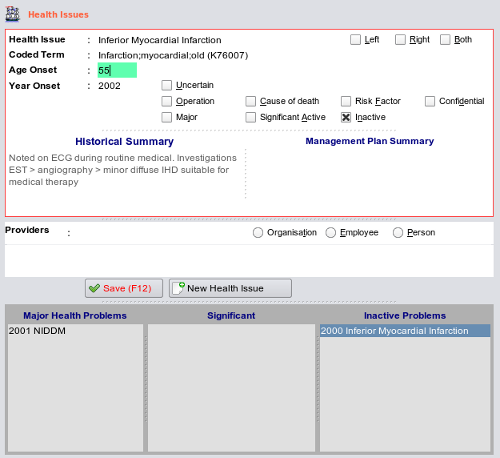

Editing Health Issues

Select the item from the list you wish to change - it will appear highlighted as is shown here.
Make your changes - here I have changed the age to 55. Note that both the edit area becomes outlined in red to indicate
a change, and the Save button becomes hightlighted with red text.
Either click the save button or press the F12 key and the changes will saved.
All actions in EasyGP are audited - ie a recording is kept when data is entered, changed or deleted - see
Auditing